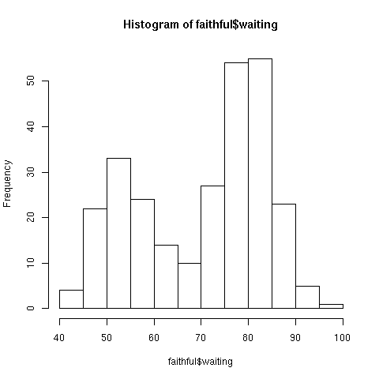
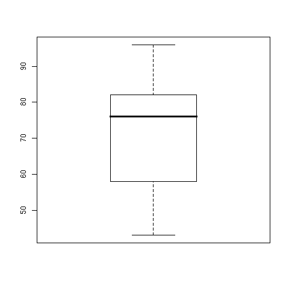
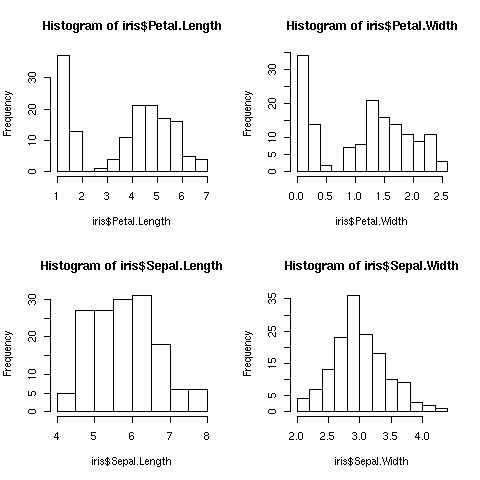
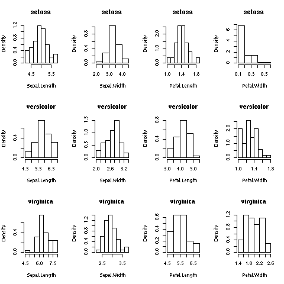

Exploration visuelle de données en R
Ce TP consiste dans l'étude de quelques outils d'exploration visuelle des données, c'est-à-dire, des outils qui nous permettent de représenter graphiquement les données. Pour cela, R peut très facilement créer des graphiques simples et utiles : scatterplots, histogrammes, camemberts. En effet, en préalable à toute fouille de données, il doit y avoir une étape d'observation des données : à l'œil, des corrélations linéaires ou non linéaires sont souvent faciles à voir ; la distribution des valeurs prises par un attribut est également pleine d'information : est-elle mono/bi/multi-modale ? uniforme ? normale ? ...
Représentation mono-dimensionnelle : histogramme d'un attribut quantitatif
La fonction hist()
Dans R, on obtient un histogramme à l'aide de la fonction
hist().
Considérons le data frame disponible dans R dénommé
faithful. Il contient des données concernant les éruptions
d'un geyser situé dans le parc de Yellowstone aux États-Unis (dénommé
Old Faithful car ses éruptions sont très régulières : il
est fidèle à ses rendez-vous).
L'attribut waiting indique l'intervalle de temps entre deux
éruptions. On obtiendra donc un histogramme de cet attribut par la
commande :
hist (faithful$waiting)
qui produira :

Que voyez-vous ? (cliquez
ici pour avoir quelques éclaircissements sur ce qu'il
fallait voir (réflechissez avant de
cliquer !)
Visualisez l'histogramme de chacun des attributs longueur et largeur des pétales et des sépales des iris. Qu'en pensez-vous ?
Vous pouvez ajouter des couleurs et des titres :
- le paramètre col="green" indique la couleur (verte ici) des barres ;
- le paramètre border="red" indique la couleur (rouge ici) des bords des barres ;
- le paramètre main="histogramme du premier attribut des iris" donne un titre du graphique ;
- le paramètre xlab="largeur des sépales" indique l'étiquette de l'axe des abscisses ;
- le paramètre axes=FALSE entraîne le non affichage des axes ;
- le paramètre labels=TRUE entraîne l'affichage des effectifs sur chaque barre.
Essayez toutes ces options.
Néanmoins, sachez que contrairement aux apparences, la confection d'un histogramme n'est pas simple. Ainsi, le découpage de l'intervalle possible peut être réalisé de différentes manières ; par défaut, R utilise la méthode de Sturges ; on peut aussi spécifier le nombre d'intervalles avec l'option breaks=n où n est le nombre d'intervalles. Essayez :
hist (faithful$waiting, breaks=5) hist (faithful$waiting, breaks=10) hist (faithful$waiting, breaks=20) hist (faithful$waiting, breaks=50)
On peut aussi construire des histogrammes dont les intervalles ne sont pas de largeur constante...
Estimation et visualisation de la densité
On a obtenu des histogrammes où l'axe des ordonnées indique l'effectif
de chaque intervalle de valeurs. Pour obtenir la proportion plutôt que
l'effectif, on ajoutera l'option probability=TRUE à la
fonction hist(). On obtient ainsi quelque chose qui
ressemble à une densité de probabilité. Faites-le pour les attributs
des iris.
On peut estimer une densité de probabilité qui approxime la
distribution des valeurs de l'attribut dont on a fait un
histogramme. Plusieurs méthodes existent.
Par exemple, après avoir dessiné l'histogramme des éruptions du Vieux
Fidèle, on ajoute une densité estimée comme suit :
hist (faithful$waiting, probability=T) lines (density (faithful$waiting), col = "green")
Faites ces manipulations sur les 4 attributs numériques des iris.
Visualisation des valeurs de l'attribut
Dans un histogramme, on ne voit plus les valeurs des attributs. Il est intéressant de visualiser la position de ces valeurs en plus de l'histogramme. Pour cela, avoir construit l'histogramme, on peut utiliser la fonction rug() avec l'attribut en paramètre de cette commande :
hist (faithful$waiting, probability=T) rug (faithful$waiting)
Si une certaine valeur est présente plusieurs fois parmi les
différentes données, celle-ci n'est visualisée qu'avec un seul petit
trait par la commande rug. Ce serait intéressant que les
traits soit plus épais quand ils représentent plusieurs fois la même
valeur. Pour cela, on utilise un truc qui se nomme le jittering
en anglais (on peut traduire par « bruitage » en
français) ; ce truc consiste simplement à ajouter une petite
quantité aléatoire à chaque donnée ; ainsi, à deux données de
même valeur est ajoutée une petite quantité aléatoire
différente ; si on représente ces deux valeurs, on obtient deux
traits l'un à côté de l'autre. S'il n'y a pas deux mais cinq valeurs
identiques, on aura cinq valeurs bruitées presqu'égales ;
visualisées à l'aide de petits traits, ce sera comme si on avait un
trait gras...
Pour bruiter des données, on utilise la commande R jitter
qui prend en paramètre les données à bruiter :
hist (faithful$waiting, probability=T) rug (jitter (faithful$waiting))
Faites ces manipulations sur les 4 attributs numériques des iris.
Représentation de la distribution d'un attribut qualitatif
La fonction barplot()
Pour un attribut qualitatif, on construit tout d'abord une table de
contingence à l'aide de la fonction table().
On peut alors faire un barplot() de cette table de
contigence.
Faites un histogramme de l'attribut Species des iris.
Représentation mono-dimensionnelle : boîte à moustaches
Une boîte à moustaches est une autre représentation de la distribution des valeurs d'un attribut. Elle s'obtient par la fonction boxplot(). Par exemple :
boxplot (faithful$waiting)
donne :

On y voit :
- l'axe des ordonnées indique des valeurs de cet attribut ;
- un rectangle avec un trait gras horizontal et des « moustaches » ;
- le bord inférieur du rectangle correspond à la valeur du premier quartile ;
- le bord supérieur du rectangle correspond à la valeur du troisième quartile ;
- le trait gras correspond à la médiane ;
- les moustaches indiquent (ici) les valeurs minimales et maximales. Ces moustaches sont au plus de longeur 1,5 fois la hauteur du rectangle ; si le minimum ou le maximum ont une valeur au-delà de ces limites, les valeurs au-delà sont indiquées par des points : ce sont des outliers.
Cette représentation permet de repérer facilement :
- la symétrie de la distribution : le trait gras est au centre du rectangle ;
- la distribution des données par la hauteur du rectangle ;
- la présence d'outliers.
Quelques remarques :
- la boîte peut être représentée horizontalement en indiquant boxplot (faithful$waiting, horizontal=T)
- on peut représenter plusieurs attributs d'un data frame à la fois simplement en les spécifiant tous en même temps dans boxplot() ;
- on peut indiquer une couleur, un titre, des légendes sur les axes x et y avec les paramètres habituels (col, main, xlab, ylab respectivement).
Dessinez une boîte à moustaches pour chacun des 4 attributs quantitatifs des iris.
Représentation mono-dimensionnelle : camembert
Une autre représentation graphique simple pour un attribut est obtenue
par le biais de camembert.
Remarquons néanmoins que les spécialistes s'accordent pour considérer
qu'un camembert est une mauvaise représentation : notre
cerveau perçoit mal les proportions des différentes parts, les unes
par rapport aux autres.
Camembert d'un attribut qualitatif
Supposons que vous vouliez obtenir un camembert représentant la
répartition des différentes classes pour les iris.
Il nous faut construire une table de contingence.
Il faut maintenant réaliser un camembert à partir de cette table. Rien
de plus simple avec la commande pie (en anglais,
pie-chart est une représentation graphique sous forme de
camembert ; plutôt portés sur les tartes et autres chaussons que
sur les camemberts, les anglais appellent donc cette représentation un
pie).
Représentez le camembert de répartition des classes d'iris.
Pour améliorer la présentation :
- le paramètre col permet de donner la couleur de chacune des parts de camembert (sous la forme col=c("green", "pink", "yellow") par exemple, s'il y a 3 parts) ;
- le paramètre main="répartition de la classe des iris" donne un titre du graphique.
Camembert d'un attribut quantitatif
Si l'attribut est quantitatif, il faut le discrétiser pour pouvoir en faire un camembert. Pour cela, on utilise la fonction cut() qui partitionne un attribut. Par exemple :
table.waiting <- cut (faithful$waiting, breaks=10)
découpe le vecteur en 10 intervalles et table.waiting contient pour chaque valeur de faithful$waiting l'intervalle dans lequel elle se situe ; les 10 intervalles sont de même largeur. On peut connaître ces intervalles par la commande :
levels (table.waiting)
table (table.waiting)fournit une table de contingence pour
table.waiting, soit l'effectif de chacun de ses intervalles.
pie (table (table.waiting)) dessine un camembert à partir
de cette table.
Faites ces manipulations pour les attributs quantitatifs des iris.
Représentation bi-dimensionnelle
Une représentation bi-dimensionnelle est très utile pour détecter les
corrélations entre 2 attributs du premier coup d'œil.
On a déjà vu comment représenter un attribut en fonction d'un autre
(on obtient un scatter-plot).
On peut réaliser cette représentation pour tous les couples
d'attributs successivement. On peut aussi obtenir tous ces
scatter-plots sur la même représentation simplement par la commande
plot(iris). Faites-le et interprétez.
Mettre plusieurs graphiques dans la même fenêtre
On peut avoir envie de représenter les 4 histogrammes des attributs
des iris en même temps, dans la même fenêtre pour pouvoir les comparer
plus facilement.
Pour cela, le principe est le suivant : on indique que l'on
découpe la fenêtre graphique en 4 puis, on dessine successivement les
4 histogrammes ; au lieu de se remplacer l'un à la suite de
l'autre, ils viennent d'ajouter dans un quart de la fenêtre.
Pour indiquer que l'on veut mettre plusieurs graphiques dans la même
fenêtre, on utilise la fonction par(mfrow=c(nombre-de-lignes,
nombre-de-colonnes).
Ici, on veut 4 graphiques ; ce peut être soit 1 ligne de 4
graphiques, soit 1 colonne de 4 graphiques, soit deux lignes de deux
graphiques. Cette dernière solution est plus jolie : on tape
donc :
op <- par (mfrow = c (2, 2))
Ensuite, on fait les 4 graphiques :
hist (iris$Petal.Length) hist (iris$Petal.Width) hist (iris$Sepal.Length) hist (iris$Sepal.Width)
Ce qui donne :

Pour revenir à une fenêtre graphique ne contenant qu'un seul
graphique, on tape par la suite (si nécessaire) :
par (op)
- Faites trois histogrammes dans la même fenêtre, chacun représentant l'attribut Petal.Length pour l'une des trois classes.
- Faites 12 histogrammes dans la même fenêtre, un histogramme pour chaque attribut quantitatif et pour chaque classe. On obtiendra par exemple : 
Liens
- voir le chapitre 3 de ce document pour des tas d'idées de graphiques et comment les faire
- voir R Graphics de Paul Murell
- voir aussi Enhance your data visualization in R